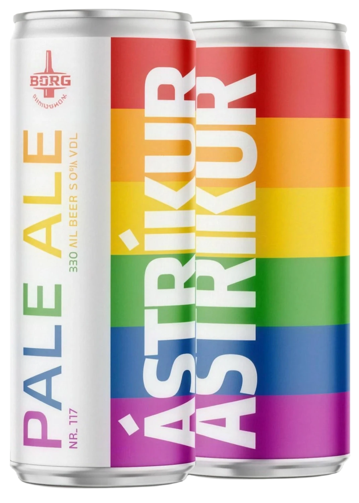
Nr. 117
Ástríkur
Pale Ale, 5.0 %
 All beers
Íslenska
All beers
Íslenska
Every entry on the list: Nr. 1 to Nr. 117, the collaborations (C) and the trial brews (T).

Nr. 117
Pale Ale, 5.0 %
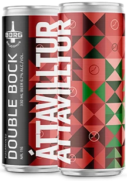
Nr. 116
Double Bock (Peppermint), 6.7 %
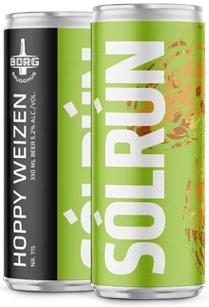
Nr. 115
Hoppy Weizen, 5.2 %
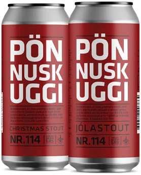
Nr. 114
Christmas Stout, 5.0 %
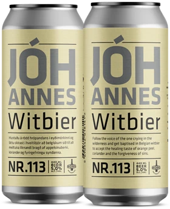
Nr. 113
Witbier, 5.0 %
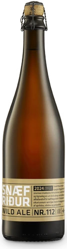
Nr. 112
Wild Ale, 8.0 %
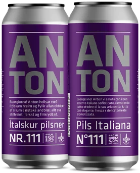
Nr. 111
Pils Italiana, 5.0 %
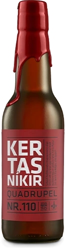
Nr. 110
Quadrupel, 10.5 %
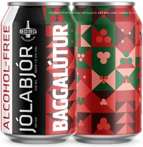
Nr. 109
Jólabjór (Christmas Beer), <0.5 %
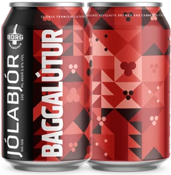
Nr. 108
Jólabjór (Christmas Beer), 5.8 %
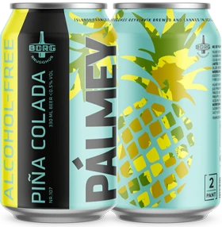
Nr. 107
Piña Colada, <0.5 %
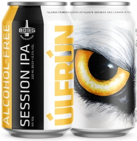
Nr. 106
Session IPA, <0.5 %
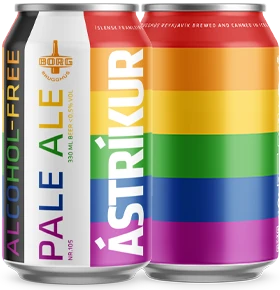
Nr. 105
Pale Ale, <0.5 %
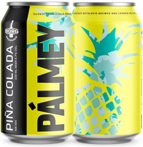
Nr. 104
Piña Colada, 4.7 %
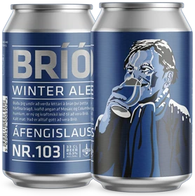
Nr. 103
Winter Ale, <0.5 %
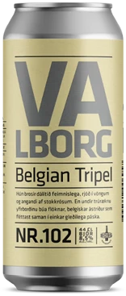
Nr. 102
Belgian Tripel, 8.5 %
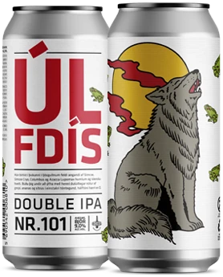
Nr. 101
Double IPA, 9.0 %
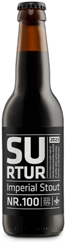
Nr. 100
Imperial Stout, 12.0 %
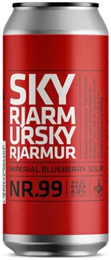
Nr. 99
Imperial Blueberry Sour, 8.0 %
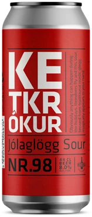
Nr. 98
Jólaglögg Sour, 8.0 %
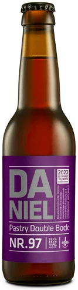
Nr. 97
Pastry Double Bock, 10.7 %
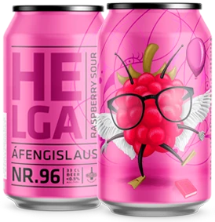
Nr. 96
Raspberry Sour, <0.5 %
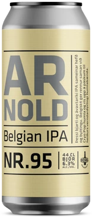
Nr. 95
Belgian IPA, 6.3 %
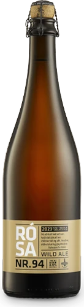
Nr. 94
WILD ALE – 2023 Pink Tequila Barrel Matured, 8.9 %
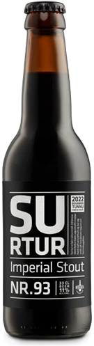
Nr. 93
Imperial Stout, 11.0 %
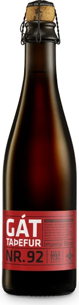
Nr. 92
Imperial Stout, 11.3 %
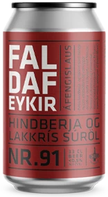
Nr. 91
Raspberry & Liquorice Sour, <0.5 %
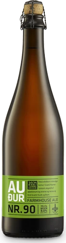
Nr. 90
Farmhouse Ale, 8.0 %
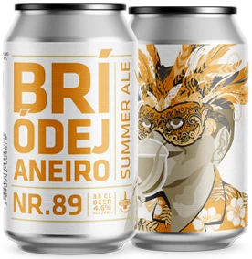
Nr. 89
Summer Ale, 4.6 %
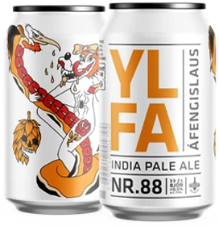
Nr. 88
India Pale Ale, <0.5 %
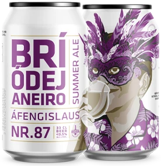
Nr. 87
Summer Ale, <0.5 %
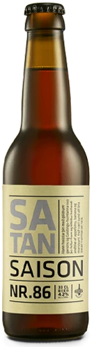
Nr. 86
Saison, 4.2 %
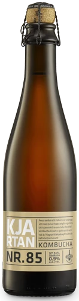
Nr. 85
Kombucha, 0.9 %
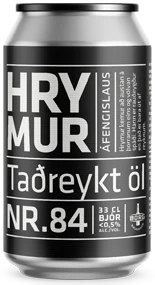
Nr. 84
Smoked Ale, <0.5 %
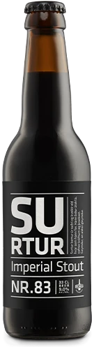
Nr. 83
Imperial Stout
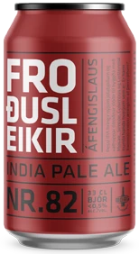
Nr. 82
India Pale Ale, <0.5 %
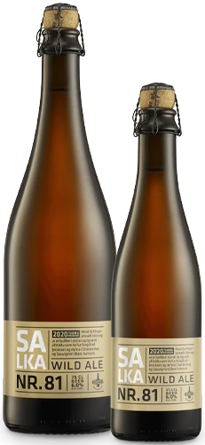
Nr. 81
Wild Ale, 6.0 %
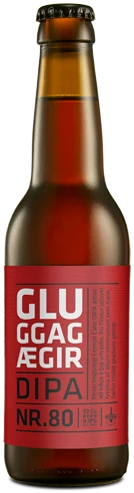
Nr. 80
Dipa, 9.0 %
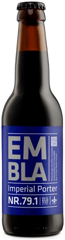
Nr. 79.1
Imperial Porter, 10.5 %
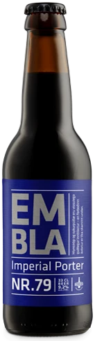
Nr. 79
Imperial Porter, 9.2 %
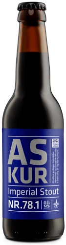
Nr. 78.1
Imperial Stout, 12.0 %
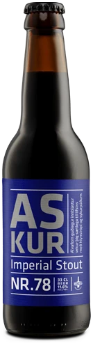
Nr. 78
Imperial Stout, 11.6 %
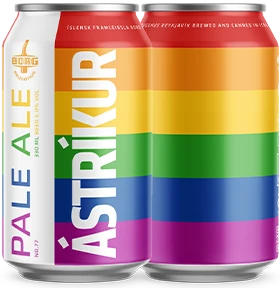
Nr. 77
Pale Ale, 5.0 %
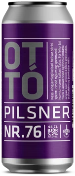
Nr. 76
Pilsner, 5.2 %
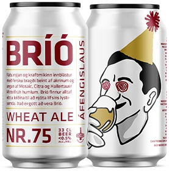
Nr. 75
Wheat Ale, <0.5 %
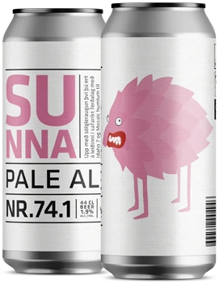
Nr. 74.1
Pale Ale, 1.9 %
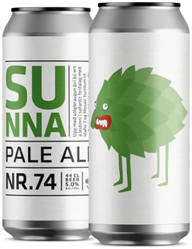
Nr. 74
Pale Ale, 5.0 %
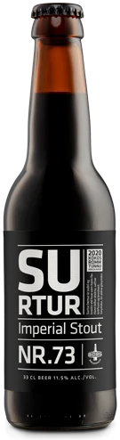
Nr. 73
Imperial Stout, 11.5 %
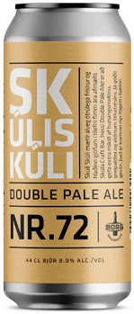
Nr. 72
Double Pale Ale, 8.0 %
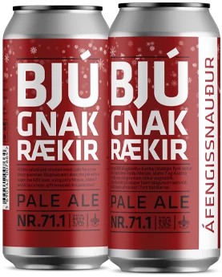
Nr. 71.1
Pale Ale, 1.9 %
Nr. 71
Pale Ale, 5.2 %
Nr. 70
Pale Ale, 4.3 %
Nr. 69
Raspberry Sour, 4.7 %
Nr. 68
Lager, 7.0 %
Nr. 67
India Pale Ale, 7.5 %
Nr. 66
Imperial Porter, 10.0 %
Nr. 65
Witbie R, 4.8 %
Nr. 64
Cherry Wild Ale, 5.5 %
Nr. 63
Flanders Red, 6.4 %
Nr. 62
Imperial Stout, 9.1 %
Nr. 61
Imperial Stout, 12.1 %
Nr. 60
Wild Ale, 5.7 %
Nr. 59
Blueberry Sour, 4.3 %
Nr. 58
India Pale Lager, 7.2 %
Nr. 57
Dubbel, 7.0 %
Nr. 56
Sour Ale, 5.5 %
Nr. 55
Imperial Stout, 14.2 %
Nr. 54
Imperial Porter, 11.5 %
Nr. 53
India Pale Lager, 4.6 %
Nr. 52
Sour Ale, 4.0 %
Nr. 51
Belgian Pale Ale, 4.6 %
Nr. 50
Triple Ipa, 11.0 %
Nr. 49
Mango Pale Ale, 4.7 %
Nr. 48
Hoppy Blonde, 5.9 %
Nr. 47
Imperial Stout, 10.0 %
Nr. 46
Mead, 10.8 %
Nr. 45
Amber Ale, 5.8 %
Nr. 44
Rauchbier, 5.5 %
Nr. 43
Strong Golden, 8.5 %
Nr. 42
Sour Ale, 4.0 %
Nr. 41
Imperial Wit, 8.4 %
Nr. 40.1
Belgian Strong, 11.0 %
Nr. 40
Belgian Strong, 10.5 %
Nr. 39
Red Ale, 5.0 %
Nr. 38
Imperial Stout, 10.8 %
Nr. 37
Mead, 9.6 %
Nr. 36
Brown Ale, 6.2 %
Nr. 35
Imperial Pilsner, 9.6 %
Nr. 34
Session Ipa, 4.5 %
Nr. 33
Brett Ipa, 5.5 %
Nr. 32
Nordic Saison, 6.8 %
Nr. 31
Saison Brett, 7.7 %
Nr. 30.2
Imperial Stout, 27.0 %
Nr. 30.1
Imperial Stout, 11.0 %
Nr. 30
Imperial Stout, 9.0 %

Nr. 29
Mead, 8.5 %
Nr. 28
Red Ale, 7.0 %
Nr. 27
Baltic Porter, 7.3 %
Nr. 26
Sheep Dung Smoked Ipa, 6.0 %
Nr. 25
Hoppy Weizen, 6.0 %
Nr. 24
Blonde Ale, 7.0 %
Nr. 23
Imperial Stout, 10.0 %
Nr. 22
Mead, 9.0 %
Nr. 21
Festivity Ale, 2.3 %
Nr. 20
India Red Lager, 5.5 %
Nr. 19.6
Icelandic Stout, 12.0 %
Nr. 19.5
Icelandic Stout, 24.0 %
Nr. 19.4
Icelandic Stout, 14.0 %
Nr. 19.3
Icelandic Stout, 15.2 %
Nr. 19.2
Icelandic Stout, 21.0 %
Nr. 19.1
Icelandic Stout, 12.5 %
Nr. 19
Icelandic Stout, 11.5 %
Nr. 18
Belgian Style, 10.0 %
Nr. 17
Double Ipa, 9.0 %
Nr. 16.1
Quadrupel, 11.5 %
Nr. 16
Quadrupel, 10.5 %
Nr. 15
Imperial Stout, 9.0 %
Nr. 14.1
Barleywine, 10.0 %
Nr. 14
Barleywine, 10.0 %
Nr. 13
Porter, 6.0 %
Nr. 12
Doppelbock, 8.0 %
Nr. 11
Wheat Beer, 6.0 %
Nr. 10
Icelandic Ale, 5.3 %
Nr. 9
Abbey Beer, 7.0 %
Nr. 8.19
Imperial Stout, 11.5 %
Nr. 8.18
Imperial Stout, 12.0 %
Nr. 8.17
Imperial Stout, 12.2 %
Nr. 8.16
Imperial Stout, 12.2 %
Nr. 8.15
Imperial Stout, 13.0 %
Nr. 8.14
Imperial Stout
Nr. 8.13
Imperial Stout
Nr. 8.12
Imperial Stout
Nr. 8.11
Imperial Stout, 12.2 %
Nr. 8.10
Imperial Stout, 12.2 %
Nr. 8.9
Imperial Stout, 13.0 %
Nr. 8.8
Imperial Stout, 13.6 %
Nr. 8.7
Imperial Stout, 15.0 %
Nr. 8.6
Imperial Stout, 13.2 %
Nr. 8.5
Imperial Stout, 13.2 %
Nr. 8.4
Imperial Stout, 14.5 %
Nr. 8.3
Imperial Stout, 12.0 %
Nr. 8.2
Imperial Stout, 14.5 %
Nr. 8.1
Imperial Stout, 13.0 %
Nr. 8
Imperial Stout, 12.0 %
Nr. 7
Brown Ale, 5.7 %
Nr. 6
Icelandic Lager, 4.5 %
Nr. 5
Märzen, 4.6 %
Nr. 4
Blonde Lager, 5.0 %
Nr. 3
India Pale Ale, 5.9 %
Nr. 2
Brown Ale, 4.3 %
Nr. 1
Pilsner, 4.7 %
Nr. C39
Rúgbjór (Rye Beer), 5.2 %
Nr. C38
Ísbjór, 7.5 %
Nr. C37
Sour, 5.7 %
Nr. C36
Hversdagsbjór (Common Lager), 5.0 %
Nr. C35
India Pale Ale, 6.4 %
Nr. C34
Vienna Kellerbier, 4.9 %
Nr. C33
NÝÁRSÖL (New Years Ale), 9.0 %
Nr. C32
Medium Dark, 1.9 %
Nr. C31
Gose, 6.5 %
Nr. C30
Hoppy Pils, 6.5 %
Nr. C29
Cream Ale, 5.0 %
Nr. C28
Áramóta Tripel (new Years Tripel), 9.0 %
Nr. C27
Wheat IPA, 7.2 %
Nr. C26
Kveik Ipa, 5.3 %
Nr. C25
Brut Ipa, 7.3 %
Nr. C24
Raspbperry & Liquorice Sour, 6.0 %
Nr. C23
Kveik IPA, 7.0 %
Nr. C22
Ipl
Nr. C21
Sour, 5.2 %
Nr. C20
Wild Ale, 6.2 %
Nr. C19
Neipa, 8.3 %
Nr. C18
Hoppy Lager, 5.5 %
Nr. C17
Gose, 5.1 %
Nr. C16
Kombucha Ale, 3.8 %
Nr. C15
India Pale Ale, 6.0 %
Nr. C14
Neipa, 7.0 %
Nr. C13
Sour Ale, 7.5 %
Nr. C12
New Year’s Eve Style (ipa), 7.6 %
Nr. C11
India Pale Ale, 6.6 %
Nr. C10
Cherry Sour, 5.3 %
Nr. C9
Red Ale, 7.5 %
Nr. C8
Sour Ale, 5.4 %
Nr. C7
New Nordic Dipa, 8.7 %
Nr. C6
Belgian Ipa, 6.0 %
Nr. C5
Autumn Sour Saison, 5.6 %
Nr. C4
India Pale Ale, 6.4 %
Nr. C3
Saison, 5.6 %
Nr. C2
Wheat Wine, 10.6 %
Nr. C1
White Stout, 6.5 %
Collaboration
Mexican Lager, 4.7 %
Nr. T46
Wild Ale, 8.5 %
Nr. T45
Ice Lolly Sour, 6.3 %
Nr. T44
Hard Seltzer, 4.5 %
Nr. T43
Whiskey Sour Ale, 8.0 %
Nr. T42
Strawberry Daquiri Sour, 8.4 %
Nr. T41
India Pale Ale, 7.2 %
Nr. T40
Piña Colada Sour, 8.2 %
Nr. T39
5.0% alc./vol.
Nr. T37
Sour IPA, 6.3 %
Nr. T36
Swim Ale, <0.5 %
Nr. T35
Belgian IPA, 6.0 %
Nr. T34
India Pale Ale, 6.1 %
Nr. T33
India Pale Ale, 5.2 %
Nr. T32
Double IPA, 8.5 %
Nr. T31
Kveik, 3.9 %
Nr. T30
Rice Lager, 5.0 %
Nr. T29
Pale Ale, 5.1 %
Nr. T28
Session Ipa, 4.9 %
Nr. T27
Cherry Sour, 4.4 %
Nr. T26
Peach Sour, 4.2 %
Nr. T25
Cherry & Vanilla Sour, 4.4 %
Nr. T24
Cocos & Lemon Sour, 4.2 %
Nr. T23
Kveik, 4.4 %
Nr. T22
Pils, 4.6 %
Nr. T21
Pale Ale, 5.2 %
Nr. T20
Double Ipa, 8.0 %
Nr. T19
India Pale Ale, 6.2 %
Nr. T18
Raspberry Sour, 5.3 %
Nr. T17
Nitro Stout, 4.0 %
Nr. T16
Pale Ale, 4.5 %
Nr. T15
Pale Ale, 5.2 %
Nr. T14
Dipa, 7.8 %
Nr. T13
Pale Ale, 5.2 %
Nr. T12
Kakó Porter, 6.5 %
Nr. T11
Pastry Stout, 10.9 %
Nr. T10
Raspberry Sour, 4.2 %
Nr. T9
Cocoa Porter, 6.6 %
Nr. T8
Ipa, 6.5 %
Nr. T7
Farmhouse IPA, 6.5 %
Nr. T6
Double IPA, 7.1 %
Nr. T5
Fruit Pale Ale, 8.4 %
Nr. T4
Double Ipa, 8.0 %
Nr. T3
Double IPA, 7.5 %
Nr. T2
Lactose DIPA
Nr. T1
Ne Ipa, 6.6 %
No beer matches that. Try another name or style.
You must be of legal drinking age in your country to enter our site.